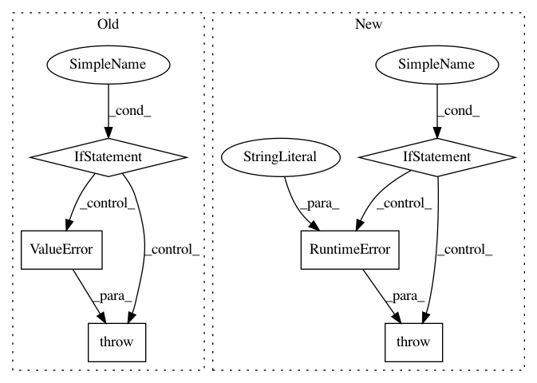

d4d15c67089a610f2e892301bdd57eb60707ce32,opennmt/utils/hooks.py,LogWordsPerSecondHook,__init__,#LogWordsPerSecondHook#Any#Any#Any#Any#Any#,124
Before Change
every_n_secs=None,
output_dir=None,
summary_writer=None):
if (every_n_steps is None) == (every_n_secs is None):
raise ValueError("exactly one of every_n_steps and every_n_secs should be provided.")
self._timer = tf.train.SecondOrStepTimer(
every_steps=every_n_steps,
every_secs=every_n_secs)
After Change
Raises:
RuntimeError: if :obj:`predictions` is empty.
if predictions:
raise RuntimeError("The model did not define any predictions.")
self._model = model
self._predictions = predictions
self._global_step = global_step
self._output_file = output_file
In pattern: SUPERPATTERN
Frequency: 3
Non-data size: 6
Instances
Project Name: OpenNMT/OpenNMT-tf
Commit Name: d4d15c67089a610f2e892301bdd57eb60707ce32
Time: 2019-04-01
Author: guillaume.klein@systrangroup.com
File Name: opennmt/utils/hooks.py
Class Name: LogWordsPerSecondHook
Method Name: __init__
Project Name: stellargraph/stellargraph
Commit Name: bcf6d0a188ee9ba868c1de01c347f813e3aaa35c
Time: 2020-01-22
Author: andrew.docherty@data61.csiro.au
File Name: stellargraph/layer/graph_attention.py
Class Name: GAT
Method Name: __init__
Project Name: NifTK/NiftyNet
Commit Name: a25f35714b66effc0764add4db72179f0da6d408
Time: 2017-06-15
Author: wenqi.li@ucl.ac.uk
File Name: engine/volume_loader.py
Class Name: VolumeLoaderLayer
Method Name: __initialise_subject_list